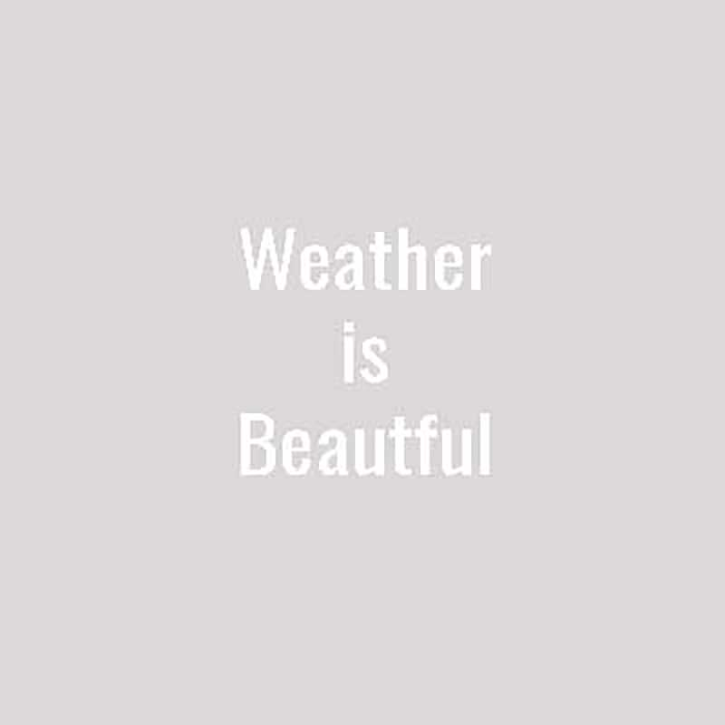

Union Pacific adds runs the moody summer clouds brewing a storm
behind.
Sunflower-Fest isn't just fun for fmailies, the flora in Northwest
Georgia is an essential part of life for millions of these little
bumbling friends. Bees head out in late summer/early fall to laod up
on pollen and carbs for the winter!
Antique locomotives get a wash and shine; ready for the big
Locomotive Chase Festival!
One of the cities biggest locomotives shows off its color right
before the Great Locomotive Chase Fest parade.
Row after row after row. Seeing these beautiful ears showing means
that summer is almost over, and cooler days are just around the
corner.
One of the BIGGEST corn mazes south of the Mason Dixie! And it does
not disappoint. Make sure you get a chance to see this bohemoth from
the ground view as you find your way out.
Spring air takes over the hills of the Blue Ridge Mountains, and
it's just blue as far as the eye can see.
Sporting in North Georgia offers an array of adventure, including a
peaceful kayak on a county river.
Some things never change. And with that is the picturesque quality
of a beautiful barn at sunrise. A scene many don't have the
privilege of seeing many times in there life. But North Georgia is
home to them.
Ah, the days of the great travel-by-rail. Railway makes up a large
percentage of import/export in our industrious area. Trains are a
daily part of life —multi-daily around these parts!
We know every place has a great sunset, but, there's nothing quite
like the sunsets here in North Georgia. The sahdes of pink and
purple that Alabama gives to us as the sun sinks over top;
breathtaking.
Civil War re-enactment trains are also a common site. Make sure to
visit all of the historic stops in North Georgia, Tunnel Hill sports
a might fine locomotive!
Chug-a-lug-a-luggin. That's what our local farmers do 3 times per
year as they harvest crops.
Something for everyone. Car shows-a-plenty! Seeing these beauties
cruise through the country-side is a simply perfect,
make-me-some-lemonade-and-sit-me-on-the-porch-with-my-rocker kind of
day.
There's a reason they're called "The Great Smokies"... seeing the
humidity breathe from the mountainside is unlike any other.